Patch 3714
Welcome to the patchnotes for the 3714 patch.
This patch primarily aims to improve the land balance between factions and between different unit choices at the T2 and T3 stages.
We wish you good luck and much fun playing with the new patch!
-- The Balance Team
Land
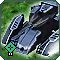 Obsidian
The obsidian's damage and rate of fire are adjusted. This is a general improvement aimed at increasing their efficiency versus T1 units and reducing the downside of a missed shot.
- Damage:
480→ 360 - RateOfFire:
0.25→ 0.333
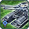 Pillar
The pillar gets a slight range reduction to allow for more micro and kiting in some matchups, notably versus the rhino.
- Range:
23→ 22
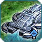 Riptide
The riptide was the weakest T2 tank after the recent Blaze buff. It gets a substantial buff to bring it closer in strength to other T2 units.
- Health:
1700→ 1800 - Mass Cost:
360→ 320 - Power Cost:
2000→ 1650 - Build Time:
1600→ 1420
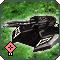 Rhino
The rhino gets a range increase of one to differentiate the ranges of the main T2 tanks more greatly, allowing for more micro and kiting.
- Mass Cost:
297→ 290 - Build Time:
1320→ 1300 - Range:
23→ 24 - Vision Radius:
20→ 22
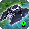 Blaze
The blaze gets a small buff to its health and range to differentiate from other hover tanks.
- Health:
1050→ 1100 - Range:
23→ 24
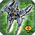 Ilshavoh
The Ilshavoh has improved micro capabilities thanks to an increase in turret turn speed. Vision radius is increased to reduce their reliance on selens and radars.
- FiringTolerance:
1→ 3 - TurretYawSpeed:
70→ 85 - Vision Radius:
20→ 24
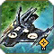 Yenzyne
The Yenzyne is given greater health and a faster fire rate with a decrease in speed to improve its effectiveness on land without overbuffing it in the naval arena.
- Health:
1300→ 1350 - Speed:
4.3→ 4 - RateOfFire:
0.25→ 0.3
 Firebeetle
Firebeetle
Firebeetles are now cheaper, faster to build and have less health. Firebeetles are permanently cloaked, meaning they must be spotted using radar and cannot be spotted using a units vision.
- Health:
500→ 350 - Mass Cost:
250→ 190 - Power Cost:
1500→ 1300 - Build Time:
1000→ 700 - Damage:
1500→ 1100 - Firebeetle can now cloak.
 Aurora
Aurora
The Aurora will now use the firing solution instead of its aim bone when targeting units. This should decrease the number of initial shots that miss.
 Harbinger
Harbinger
Harbingers get a significant buff, gaining a small amount of range to allow for more micro possibilities while also gaining some health and a fast shield recharge speed. Their fire cycle is also adjusted.
- Health:
3050→ 3600 - Range:
26→ 27 - Damage:
320→ 160 - RateOfFire:
1→ 2 - ShieldRechargeTime:
40→ 30
 Titan
Titan
Titans get a buff in range, and small health and shield buffs. Damage is reduced slightly to prevent overbuffing.
- Health:
2550→ 2600 - Shield:
600→ 700 - Damage:
50→ 45 - Recharge Time:
15→ 12 - Range:
22→ 24
 Loyalist
Loyalist
The Loyalist gains damage and range at the expense of health. It also gains a new ability called "Charge." When activated, a ten second countdown begins and the Loyalist will self-destruct at the end of that countdown. After four seconds the Loyalist gains a x1.75 speed boost and its stun duration is doubled. The delay between pressing the charge button and gaining these advantages is to stop players from simply enabling the ability as any Loyalist is about to die. Once the charge starts after 4 seconds a timer appears over the head of the Loyalist. At the end of the countdown the loyalist will explode. The aim of the new ability is to accentuate the death weapon of the Loyalist and allow for new gameplay opportunities.
- Health:
3000→ 2500
-
EMP explosion on death:
- Duration:
1.4s→ 1.5s
-
2nd Weapon (Heavy Electron Bolter):
- Damage:
14→ 28 - Range:
20→ 24
-
Charge ability:
- Stun duration when charging: 3
- Speed boost while charging: x1.75
- SecondsBeforeChargeKicksIn = 4
- SecondsBeforeExplosionWhenCharging = 6
 Percival
Percival
- Damage:
1670→ 1450 - Rate of Fire:
0.2→ 0.23 - Muzzle Velocity:
38→ 36
The Percival has its fire cycle adjusted to be less frontloaded and its shots are slightly more dodgeable.
 Brick
Brick
- MuzzleVelocity:
42→ 38
The Brick's shots are more dodgeable.
 Othuum
Othuum
The Othuum is buffed with greater speed and damage. Health is reduced. The thau cannon has area of effect damage so that it can easily deal with tech 1 point defense.
- Health:
5000→ 4700 - Speed:
2.6→ 2.75 - SizeY:
0.45→ 0.65 - SizeZ:
2.0→ 2.3 - Damage:
46→ 64 - Muzzle Velocity:
40→ 30 - Range:
21→ 20 - Damage:
525→ 625 - DamageRadius(AoE):
0→ 1.2
First 2 Guns:
3rd Gun:
 Sprite Striker
Sprite Striker
Snipers have reduced speed and higher cost as they were too often chosen over the main T3 battle tanks.
- Speed:
2.85→ 2.6 - Mass Cost:
720→ 800 - Power Cost:
8000→ 8900 - Build Time:
4000→ 4500
 Usha-Ah
Usha-Ah
Snipers have reduced speed and higher cost as they were too often chosen over the main T3 battle tanks.
- Speed:
2.5→ 2.4 - Mass Cost:
800→ 880 - Power Cost:
8800→ 9700 - Build Time:
4300→ 4900
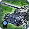 T3 Mobile Artillery
Tech 3 artillery became a strong option versus tech 3 tanks after the tech 3 land health reduction. These changes are designed to prevent them from so easily being used against massed tech 3 and tech 2. They will have a harder time retreating from armies.
-
Aeon:
- Speed:
2.5→ 2.2 - Minimum Range:
0→ 25 - Speed:
2.5→ 2.2 - Minimum Range:
0→ 25 - Unpacking Animation:
1-2s→ ~4s - Speed:
2.5→ 2.2 - Minimum Range:
0→ 25 - Unpacking Animation:
1-2s→ ~4s - Damage Radius(AoE):
6→ 5 - Speed:
2.5→ 2.2 - Minimum Range:
0→ 25 - Unpacking Animation:
1-2s→ ~4s - Damage Radius(AoE):
7→ 6
UEF:
Seraphim:
Cybran:
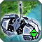 T2 Engineer
Higher tech engineers have greater build range to reduce pathfinding conflicts during base building.
- MaxBuildDistance:
5→ 6
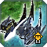 T3 Engineer
Higher tech engineers have greater build range to reduce pathfinding conflicts during base building.
- MaxBuildDistance:
5→ 7
 Galactic Colossus
Galactic Colossus
Death Weapons for some experimentals are adjusted to better match the size of the units.
- Death Weapon Damage:
7500→ 8000 - Death Weapon Radius:
4→ 7
 Ythotha
Ythotha
Death Weapons for some experimentals are adjusted to better match the size of the units.
- Death Weapon Damage:
10000→ 7000 - Death Weapon Radius:
8→ 6
 Monkeylord
Monkeylord
Death Weapons for some experimentals are adjusted to better match the size of the units.
- Death Weapon Radius:
7→ 6
 Megalith
Megalith
Death Weapons for some experimentals are adjusted to better match the size of the units.
- Death Weapon Damage:
7500→ 8000 - Death Weapon Radius:
4→ 9
Air
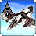 Air scouts
The turn rate change in a previous patch created landing difficulties for these planes. The turn rate change is reverted and they have a reduced speed instead.
- Turn Rate:
0.6→ 0.8 - Speed:
20→ 19
Spy planes
The turn rate change in a previous patch created landing difficulties for these planes. The turn rate change is reverted and they have a reduced speed instead.
- Turn Rate:
0.6→ 0.8 - Speed:
30→ 27
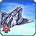 Swiftwind
The swiftwind gets a cost increase as it is a powerful fighter which can be accessed easily and spammed quite early into the game.
- Mass Cost:
200→ 235 - Power Cost:
6000→ 6750 - Build Time:
1600→ 1800
 Jester and Stinger
Jester and Stinger
The weapons on these gunships have a greater range of motion to bring them in line with other gunships.
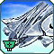 Specter
The Spectre now has a cannon akin to the oblivion turret or the exodus class destroyer although much weaker. This differentiates the gunship from those of the other factions and gives Aeon extra options at the T2 air stage.
- Mass Cost:
240→ 270 - Power Cost:
4800→ 5400 - Build Time:
1600→ 1800 - Damage:
13→ 78 - Rate of fire:
1.25→ 0.208 - Muzzle Velocity:
40→ 25 - Damage radius:
0→ 2 - Range:
22→ 20
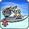 Notha
The Notha is nerfed to bring it back to a similar effectiveness as before. The buffing in previous patches was unintended and severe.
- BreakOffDistance:
1.5→ 5 - BreakOffTrigger:
10→ 15 - Rate of fire:
0.2→ 0.1
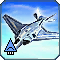 Air Superiority Fighters
ASF are nerfed to allow for more aggressive air usage in the T3 stage. They will have a harder time catching threats presented across the map.
- Speed:
25→ 22
 Czar
Czar
The Czar has been due a serious buff for a while and it is finally here. The flying fortress is now equipped with a shield to allow for incursions into and retreats from enemy territory. The AA capabilities are also greatly increased.
- Health:
58000→ 40000 - Personal shield:
0→ 30000 - Shield recharge time: 120
- Shield regen rate: 180
- Energy consumption:
0→ 500 - SAM range:
64→ 120 - SAM damage radius
0→ 2 - SAM velocity:
50→ 100
 Ahwassa
Ahwassa
Death Weapons for some experimentals are adjusted to better match the size of the units. Ahwassa also has its speed reduced because of the ASF speed nerf.
- Speed:
20→ 18 - Death Weapon Radius:
8→ 10
 Soul Ripper
Soul Ripper
Death Weapons for some experimentals are adjusted to better match the size of the units.
- Death Weapon Damage:
5000→ 7500 - Death Weapon Radius:
4→ 8
Navy
Structures
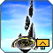 T2 Air HQ
The lower cost of the T2 Air HQ compared to land and navy led to a T2 air rush being a no-brainer on 20x20 1v1 maps.
- Mass cost:
840→ 920 - Energy cost:
14400→ 18000 - Buildtime:
1800→ 2000
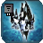 Shou-esel
- Speed:
1→ 2.5 - Speed while submerged:
0.5→ 1.5
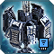 T3 Sonar
T3 sonar energy maintenance is increased to reflect the effectiveness of this intel structure.
-
Aeon+UEF:
- Energy Maintenance:
250→ 500 - Energy Maintenance:
400→ 700
Cybran:
ACUs
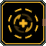 Regen Aura
The Seraphim Restoration Field upgrade is moved from the right arm to the left arm allowing for it to be used with the gun upgrade. Regen ceiling values are also adjusted slightly.
Regen Ceiling:- T1: 10 hp/s
- T2: 15 hp/s
- T3: 25 hp/s
- T4: 40 hp/s
- SCU: 30 hp/s
- Upgrade position:
Right arm→ Left arm
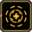 Advanced Regen Aura
The Seraphim Restoration Field upgrade is moved from the right arm to the left arm allowing for it to be used with the gun upgrade. Regen ceiling values are also adjusted slightly.
Regen Ceiling:- T1: 20 hp/s
- T2: 50 hp/s
- T3: 120 hp/s
- T4: 240 hp/s
- SCU: 140 hp/s
- Upgrade position:
Right arm→ Left arm
 Seraphim ACU Resource Allocation System
Seraphim ACU Resource Allocation System
The RAS upgrade is moved from the back to the right arm to even out the options between the three upgrade slots.
- Upgrade position:
Back→ Right arm
Game Mechanics
 Veterancy
Veterancy
Since the change to a mass-based veterancy system where you gain veterancy points based on the mass value of damage done, several special rules or exceptions have been introduced in attempts to balance the veterancy system. In this patch we are trying to remove as many exceptions as possible to make the system more transparent, understandable and predictable.
ACU Veterancy gained from damaging units:- T2:
50%→ 100% - T3:
33%→ 100% - T4:
25%→ 100% - SACU:
30%→ 100% - ACU:
5%→ 100%
- 2nd level:
2000→ 2250 - 3rd level:
3000→ 4000 - 4th level:
4000→ 6500 - 5th level:
5000→ 10000
- T1/SACU/Exp: 2
- T2:
2→ 1.5 - T3:
2→ 1.25
 Trees
Trees
Broken trees now leave a larger amount of resources. Breaking trees is no longer such a painful experience.
- Broken tree resource modifier:
1.25→ 2
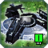Nuke projectile
A nuclear missile now kills and passes through any air unit it comes into contact with excepting air experimentals.
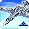Strategic Bomber bomb collision
A bomb from a strat bomber no longer collides with ASF. This decision was taken because the use of strats for sniping key structures is an unrewarding investment as people have become much better at blocking the bombs using ASF.
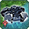Support unit attack move stopping range
All mobile shields and land scouts now stop at an appropriate range from enemy units when using an attack move.